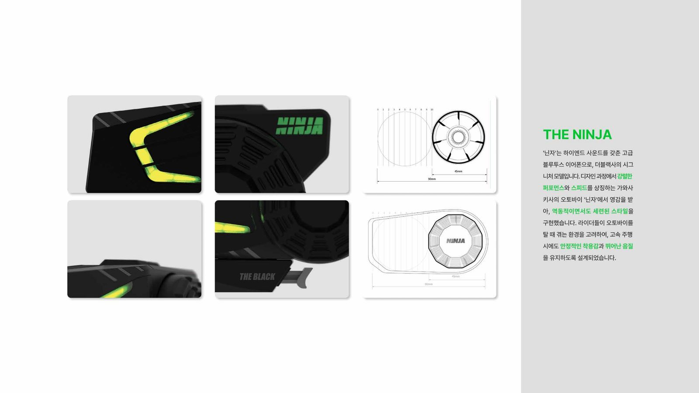
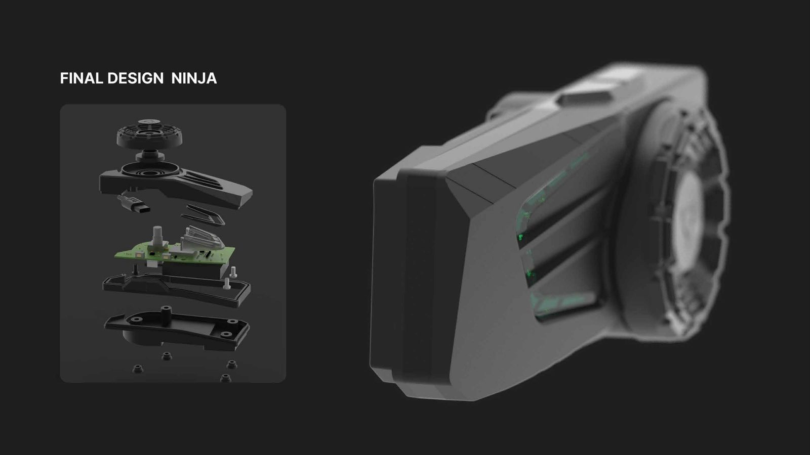
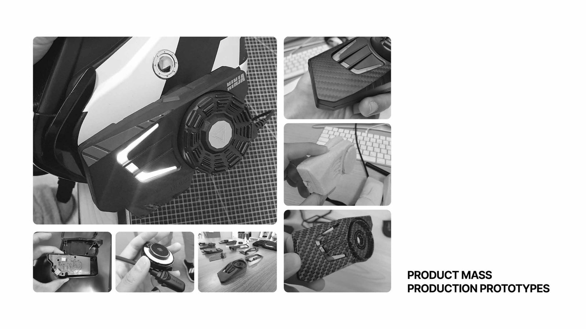

더블랙은 오토바이 라이더를 위한 블루투스 이어폰을 만드는 회사다. "닌자"는 그 중에서도 하이엔드 사운드를 갖춘 시그니처 모델로 기획됐다.
이어폰이지만, 오토바이를 타는 순간의 감각을 담아야 했다.

모델명은 이미 "닌자"로 정해져 있었다. 가와사키 닌자 오토바이가 주는 이미지 — 강렬한 퍼포먼스와 스피드 — 를 손바닥만한 이어폰의 형태로 번역하는 게 과제였다.
이어폰은 작지만, 착용감이 곧 브랜드 경험이다. 고속 주행 중에도 흔들리지 않는 안정적인 착용감이 필요했다.
날렵함이라는 이미지를 장식이 아니라, 실제 착용했을 때의 실루엣 자체로 보여줘야 했다.
역동적이면서도 세련된 스타일을 이어폰의 외형에 그대로 옮겼다. 라이더가 오토바이를 탈 때 겪는 환경을 고려해, 고속 주행 시에도 안정적인 착용감을 유지하도록 설계했다.

디자인 컨셉을 정하는 것에서 끝나지 않고, 실제 생산 공정과 양산 단계까지 함께 챙겼다. 도면 위의 디자인이 아니라 실제로 만들어지는 제품이어야 했다.
디자인이 아무리 좋아도 생산이 안 되면 의미가 없었다. 이 프로젝트를 통해 디자이너의 역할이 컨셉을 그리는 데서 끝나지 않고, 실제로 만들어지는 것까지 책임지는 일이라는 걸 다시 확인했다.
제조업 기반 클라이언트와 일할 땐, 아이디어의 신선함만큼이나 "이게 실제로 찍혀 나올 수 있는가"가 디자인 결정의 중요한 기준이 됐다.
닌자는 스케치에 머무르지 않고 실제로 양산돼 판매되는 제품이 됐다. 더블랙은 이제 "저작권을 사온 회사"가 아니라 자체 디자인을 가진 브랜드로 소개될 수 있게 됐다.
